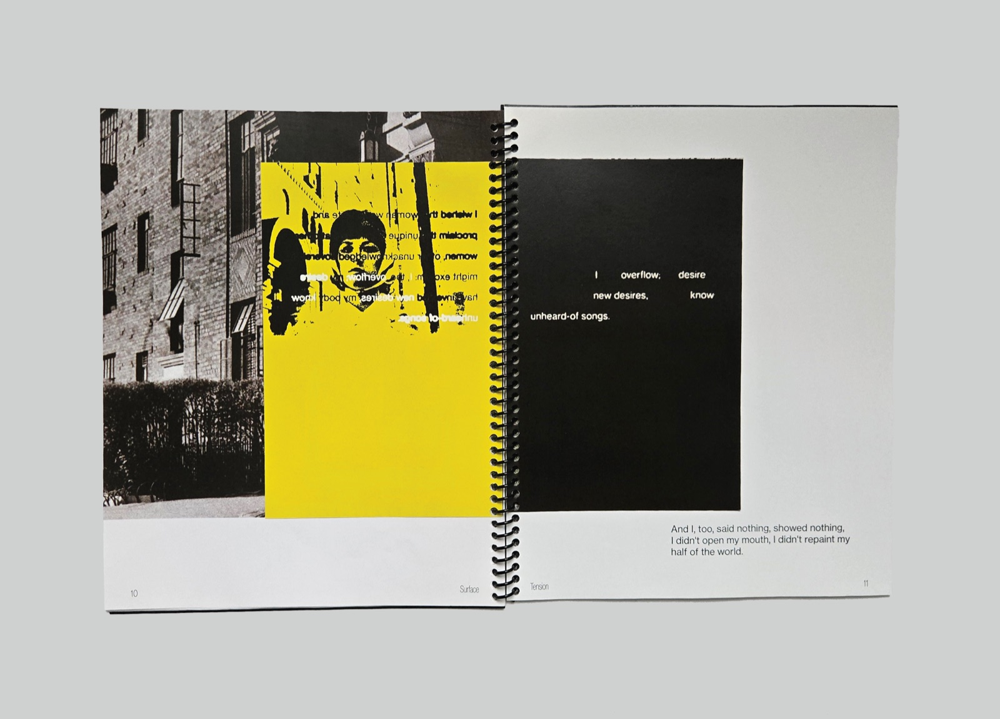
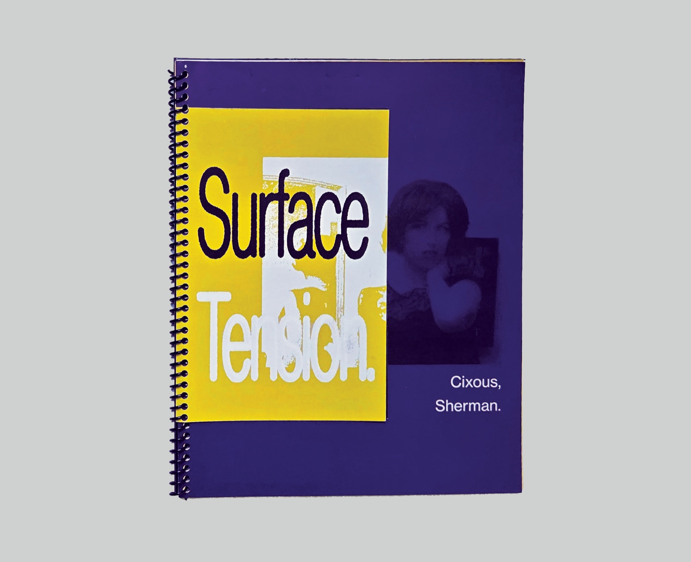
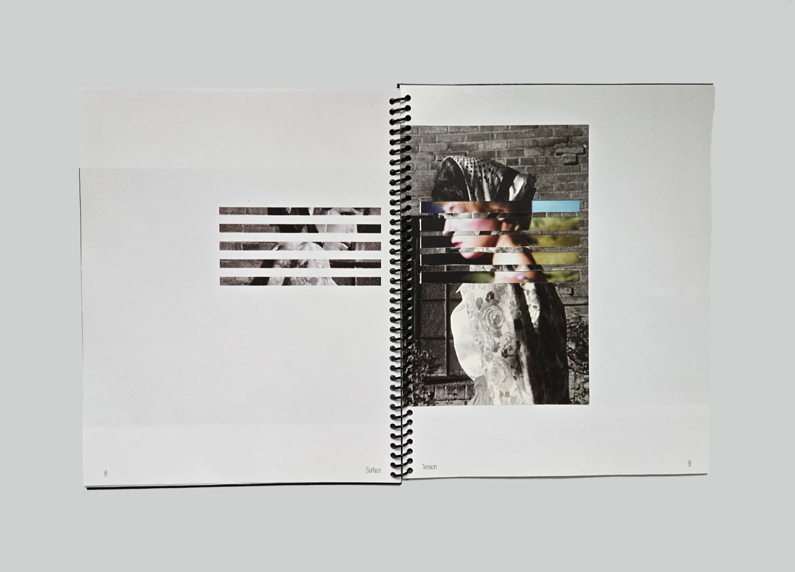
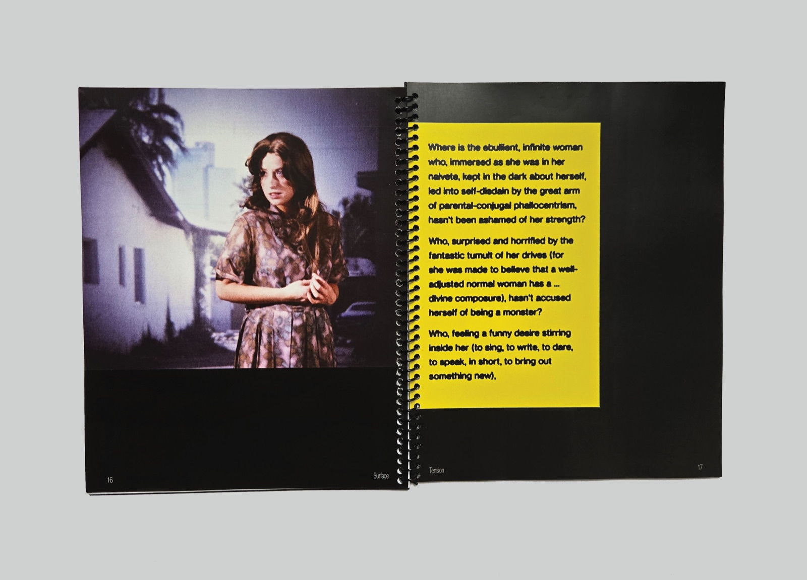
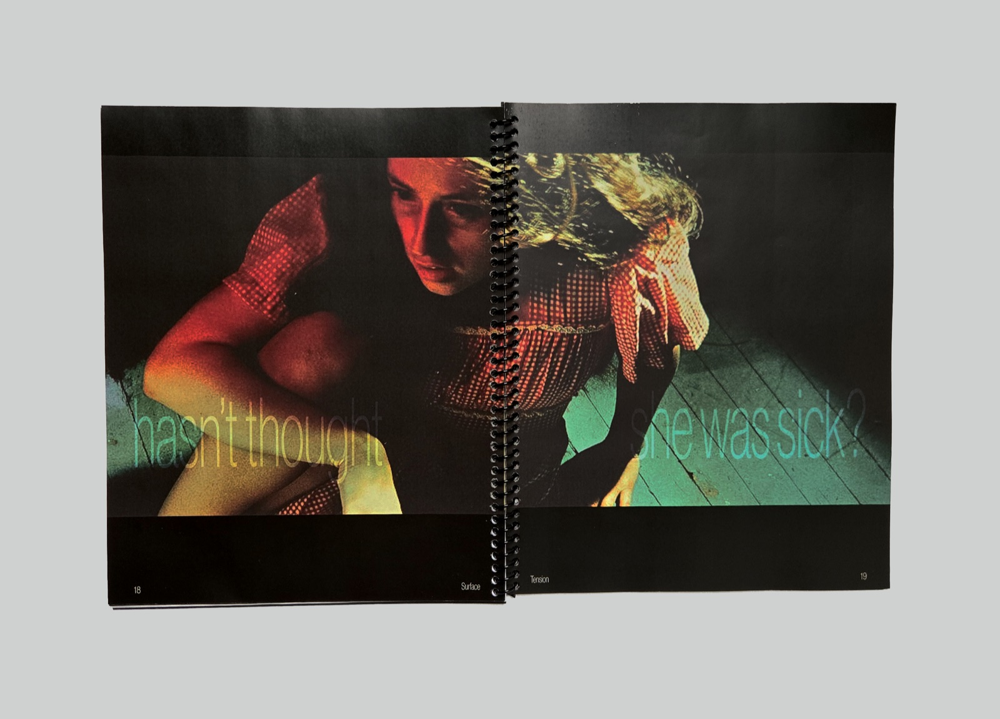
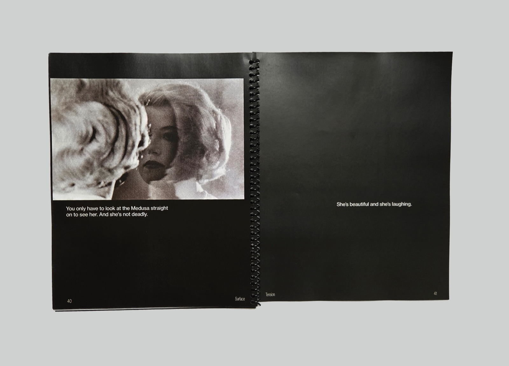
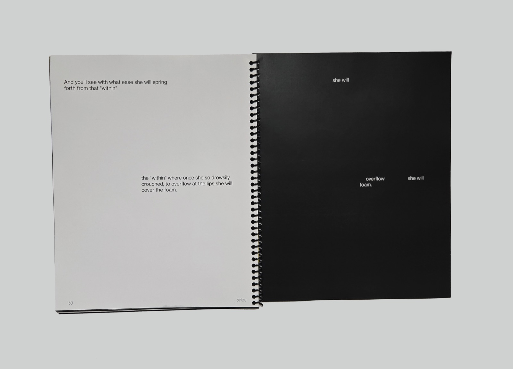

Surface Tension
- Concept Development
- Experimental Typography
- Image Sequencing
This book pairs photographs from Cindy Sherman’s Untitled Film Stills and Centerfolds series with excerpts from Hélène Cixous’s "The Laugh of the Medusa," interrogating what women are conditioned to feel publicly ashamed of, and how those feelings begin to transform during private reflection.
The sequence opens with Sherman’s images in public outdoor spaces, her constructed facades seeking societal acceptance. As I arranged these photographs, I reflected on subjects I avoid in public and how their suppression shapes my own experience of shame as a woman.



The bleed-through
As the photos transition into more intimate, interior settings, the accompanying text intensifies. Here, I introduced the bleed-through concept: blackout poetry crafted from Cixous’s writing on shortsheets, where the censored text on the front emerges on the reverse. This effect exposes powerful, explicit language, mirroring the way suppressed feelings surface when attempts at concealment fail.




Concealment and revelation
Cut images from Untitled Film Stills are paired with the intense color photography of Sherman’s Centerfolds series, their identities manipulated through blind-like rectangles that restrict vision. This book has become a meditation on concealment and revelation within womanhood, reclaiming pride in what I was once taught to hide in shame.